|

|
||
| E-voting system - CHVote | Contact : github-chvote@etat.ge.ch | EN |
|
CHVote : un système public, suisse Le système de vote électronique CHVote est une réponse concrète et une avancée réelle en matière de numérique et d’e-government. Ce système est le fruit d’une collaboration transversale entre la Chancellerie d’Etat et la direction générale des systèmes d’information du département de la sécurité et de l’économie du canton de Genève. L’Etat de Genève est un pionnier dans le domaine du vote électronique, avec plus de 100 scrutins effectués avec succès depuis 2003. CHVote, entièrement développé, hébergé et exploité par le canton, est aujourd’hui l’un des deux seuls systèmes accrédités par le Conseil fédéral en Suisse. Il est offert à près de 125’000 votants de 4 cantons (Genève, Berne, Lucerne et Bâle), tant pour les votations que pour les élections au niveau communal, cantonal et fédéral. Il permet également aux personnes en situation de handicap de participer aux scrutins. |
Transparence et sécurité, Le 19 août 2015, le Conseil d’Etat a transmis au Grand Conseil, un projet de loi qui vise à augmenter la transparence, en permettant la publication du code source du système du vote électronique sur Internet. L’Etat de Genève souhaite renforcer la confiance des électrices et des électeurs dans un système transparent et sécurisé. En effet, l’importance de la transparence maximale en matière de droits politiques et de vote électronique est une priorité pour le canton de Genève. Depuis le 8 mars 2015, CHVote est devenu un système dit de deuxième génération avec des exigeances de sécurité fixées par la Confédération Suisse (vérifiabilité individuelle). |
Licence open source : Le 27 juillet 2016, le Conseil d’Etat a choisi de retenir la licence open source Affero GPL pour la publication du code source, la plus conforme à la pratique. Cette licence est rédigée par la Free Software Foundation, gage de rigueur éthique et de visibilité internationale. L’Etat de Genève encourage les communautés d’informaticiens à contribuer à l’amélioration du code source. |